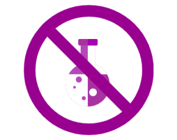

Organica
Home
Organic Lifestyle
Organic Food
Organic Community
Citation
Welcome to Organica
The Website Dedicated to Eating Organic
Food grown without any pesticide or GMO is the organic way of eating.

See what people are saying about Organic eating
Contact:
sosaeman@gmail.com